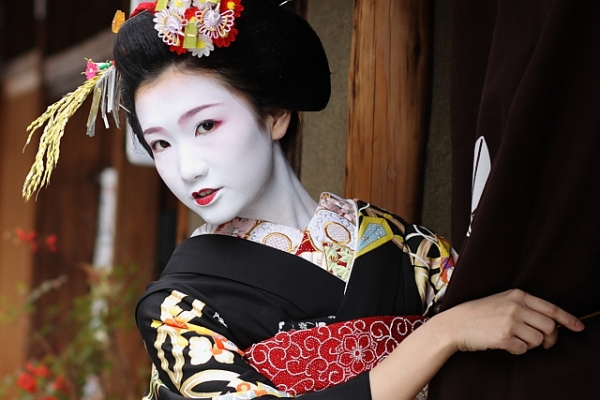

Gheișa
Gheișa (însemnând „artist/ă” sau „persoană a artelor”) este o damă de companie care în același timp este și dansatoare și interpretă de artă tradițională japoneză.
Gheișele erau foarte cunoscute în secolul al XVIII-lea și în secolul al XIX-lea. Ele mai
există și astăzi, cu toate că numărul lor este în permanentă scădere.
Înfățișarea unei gheișe variază de-a lungul carierei, de la culorile vii ale unei gheișe ucenice, la înfățișarea sobră a unei gheișe experimentate.
Cosmetice
Gheișele folosesc foarte multă pudră albă și au obiceiul să își contureze buzele cu roșu, iar ochii sunt accentuați cu negru și roșu.

Îmbrăcăminte
Gheișele poartă kimono. Gheișele-ucenice au kimonouri viu și divers colorate cu un obi (eșarfă care se leagă în jurul brâului) extravagant. Gheișele mai experimentate poartă kimonouri cu stiluri, modele și culori mai sobre. Se spune că o gheișă niciodată nu este văzută cu un kimono mai mult de o dată în timp ce produce divertisment. Kimonourile gheișelor sunt decoltate la spate, pentru că în lumea japoneză, ceafa și gâtul sunt folosite în ritualul seducției bărbaților.
Culorile și modelele kimonoului sunt, de asemenea, în funcție de anotimp și de evenimentul la care participă. Iarna, de exemplu, gheișa poate fi văzută purtând peste kimono un palton de lungimea trei-sferturi căptușit cu mătase pictată de mână. Kimonourile căptușite sunt purtate în timpul anotimpurilor mai friguroase, iar cele necăptușite în timpul verii. Un kimono poate necesita de la doi la trei ani pentru a fi creat, pictat și brodat.
Gheișele se încalță cu sandale cu talpa foarte înaltă, zori, când merg afară, și poartă doar tabi (șosete albe) înăuntru. Când vremea este ploiasă, gheișele se încalță cu niște saboți de lemn, numiți geta. Gheișele ucenice au niște saboți speciali din lemn negru lăcuit, okobo (sau pokkuri).
Coafura
Coafurile gheișelor au variat de-a lungul istoriei. În trecut, femeile își purtau părul pe umeri în unele perioade, și prins desupra capului în altele. În secolul al XVII-lea, a apărut tradiționala shimada, un fel de coc elaborat, purtat de gheișele consacrate.